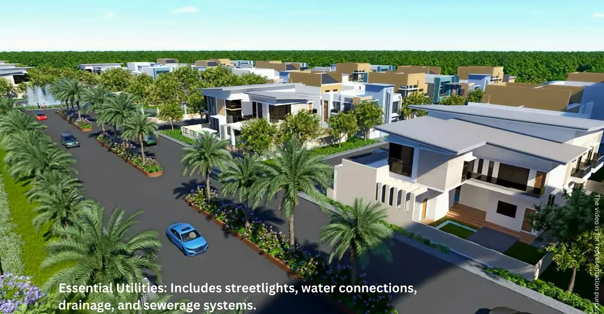
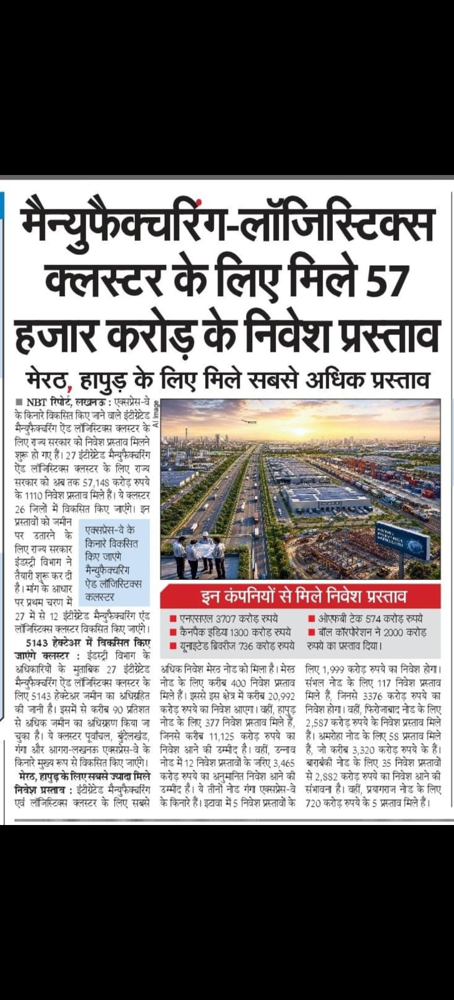
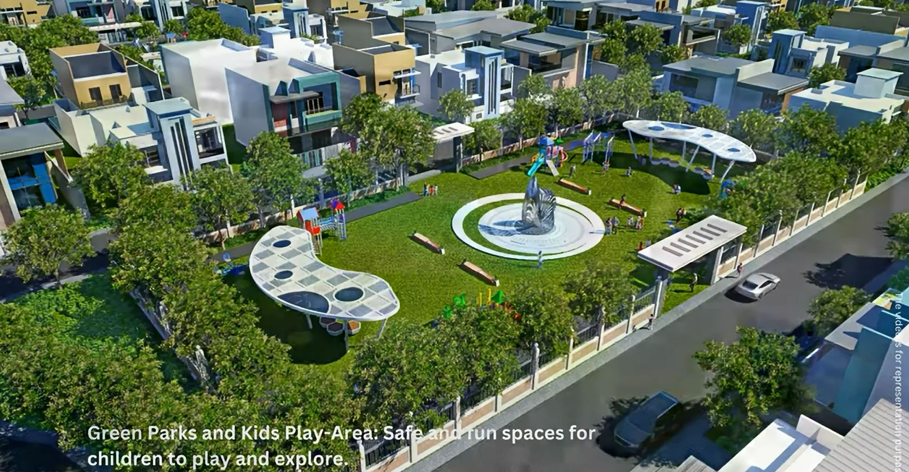

Explore expert guides, price lists, and investment strategies for buyers looking for the best plots in UP, highway side plots, and properties near the Ganga Express Highway.
Understand the tax implications, stamp duty differences, and capital gains rules after converting agricultural land to residential plots.
Detailed construction cost breakdown per square foot, material estimates, labor charges, and architectural planning tips.

Comprehensive distance and travel time chart to top educational institutions, healthcare centers, and daily convenience hubs.
Essential steps for connecting your property drainage system to municipal or township sewage treatment plants safely.

How outstation buyers and NRIs can leverage aerial drone footage and satellite maps to verify land boundaries and terrain.
An economic evaluation of how annual cultural festivals and tourism surges drive regional land appreciation in Garhmukteshwar.

Real-life case studies of early investors who achieved stellar returns through strategic land investments in Garhmukteshwar.
Explore transit-oriented real estate growth and how upcoming mass rapid transit networks enhance property accessibility.
An objective comparison of pricing, accessibility from Delhi-NCR, and lifestyle potential between two sacred riverside locations.
Understand the differences in tax rates, development controls, and administrative approvals under local governing bodies.
Distance metrics, highway routes, and transit times connecting Garhmukteshwar to Lucknow, Meerut, Ghaziabad, and Noida.
Practical steps on official land demarcation, fencing guidelines, and legal precautions to protect your plot boundaries.
Step-by-step procedure for transferring land ownership records in government revenue registers (Dakhil Kharij).
Detailed cost breakdown covering stamp duty, registration fees, legal documentation charges, and available government rebates.
Legal framework, gift deed structuring, and minor ownership guidelines for passing down property to the next generation.
Commercial shops and retail spaces tied to Ganga County — who should evaluate and how to enquire.
Discover top-performing districts offering high capital appreciation and infrastructure growth.
Top investment locations and corridor analysis along the upcoming expressway route for maximum appreciation.
Find peaceful, green, and secure plots near Garhmukteshwar for ideal retirement living.
Discover high-growth regions, pricing trends, and where to find the best plots in UP for maximum appreciation in 2026.
An objective comparison of location, connectivity, and amenities to help you choose the best plots near Delhi NCR.
Discover peaceful, green, and well-connected land options near the expressway tailored for peaceful retirement living.
Analysis of emerging growth corridors, expressway connectivity, and land asset appreciation.
Comparing entry pricing, capital growth potential, and lifestyle benefits between Greater Noida and Garhmukteshwar.
Everything you need to know about purchasing land and building weekend retreats near the sacred Brijghat banks.
Strategic analysis on whether to invest during pre-launch or wait for possession completion.
Core overview of sizes, price, location, amenities and how to enquire on gangacounty.com.
Explore co-ownership advantages, tax deductions on home loans, and smart payment structuring with family members.
Detailed FEMA guidelines, property acquisition rights, and banking procedures for non-resident Indians buying land in UP.
Understand short-term vs. long-term capital gains, indexation benefits, and legally sound tax-saving options for land sellers in UP.
Evaluate why corner plots command higher preference, ventilation benefits, architectural flexibility, and resale value advantages.
Experience peaceful morning walks, club amenities, secure environment, and riverfront serenity.
Explore the positive energy, sunlight advantages, and architectural guidelines for choosing Vastu-compliant east-facing plots.
Discover sustainable planning, lush green parks, clean air, and eco-conscious township features.
A comprehensive review of prime locations, pricing trends, and size specifications for building custom weekend farmhouses.
Gateway to custom weekend retreats, wellness living, and high-ROI land plots in Garhmukteshwar.
Plan your weekend site visit from Delhi-NCR effectively with travel routes, inspection checkpoints, and itinerary guides.
Comprehensive pricing breakdown, installment structure, registration costs, and payment milestones.
Detailed walkthrough of plot reservation, documentation, payment terms, and allotment procedures.
Understand permissible height, setbacks, FAR, and architectural guidelines for constructing your villa or home.
Learn how to secure bank financing against your plot ownership titles, eligibility criteria, and mortgage procedures.
Short-term vs long-term capital gains tax rules, indexation benefits, and tax-saving options for land sellers.
Compare price premiums, aesthetic benefits, and resale advantages between corner plots and park-facing plots.
An in-depth analysis of payment structures, financial discounts, and cash flow management for property buyers.
How to use plot loan calculators, interest rate computations, and sample monthly installment schedules.
Investor guide on timing your exit, finding buyers, and maximizing capital gains upon project maturity.
गंगा काउंटी गढ़मुक्तेश्वर में प्लॉट की कीमत, लोकेशन के फायदे और 2026 निवेश संभावनाओं की पूरी जानकारी।
What genuine buyers and investors are saying about development speed, location, and potential ROI.
Understand gift deed regulations, stamp duty concessions for blood relatives, and transfer procedures.
A transparent breakdown of applicable GST rates on plots, maintenance deposits, and miscellaneous buyer fees.
Route maps, travel times via NH-9 and upcoming expressways, and smooth commute highlights.
Expert tips on verifying encumbrance certificates, chain of ownership, and legal due diligence.
60-acre gated township details, plots near Delhi NCR, Ganga Ji, and Hapur connectivity.
Evaluate the benefits and legal safeguards of co-investing in property plots with friends or business partners.
Why long-term land holding along upcoming expressway corridors is considered a wealth-building asset class.
In-depth layout review, road width specifications, commercial zones, and long-term land appreciation.
Understand developer policies regarding payment grace periods, late fees, and installment management guidelines.
FEMA guidelines, NRE/NRO account transactions, and remote management for non-resident Indian investors.
Illustrative ₹21,500/Sq.Yd. math, Expression of Interest (EOI) vs booking, and price-revision watch.
Expected timelines for plot demarcation, infrastructure readiness, and physical possession handover.
Important update on plot price revisions, high market demand, and early booking advantages.
Analyzing weekend getaway rentals, homestay demand, and income potential from built villas.
What to inspect on site, documents to ask, and booking steps from Noida / Delhi via NH-9.
Understand 1% Tax Deducted at Source (TDS) guidelines, Form 26QB filing, and deadlines for real estate buyers.
Answers to common questions regarding location, pricing, site visits, legal approvals, and amenities.
Starting ₹21,500/Sq.Yd., 183 Sq.Yd. plot sizes, EMI options, and e-brochure details.
Detailed comparison of pricing, developer credibility, road infrastructure, and gated amenities.
Comparing safety from flood zones, township master planning, and gated infrastructure against open riverside plots.
A comprehensive look at underground cabling, sewage treatment plants, water supply lines, and civic utilities.
Latest construction status, travel time reduction, and real estate growth impact on Garhmukteshwar.
Detailed corridor map, key entry/exit nodes, and travel times connecting Garhmukteshwar to major hubs.
How to navigate official land details, download e-brochures, check price lists, and request site visits.
A comprehensive breakdown of top residential zones, infrastructure upgrades, and emerging land hubs in Garhmukteshwar.
Strategic insights for real estate investors looking at high-yield land opportunities, legal safety, and growth forecasts.
In-depth analysis of property price appreciation, land demand, and future growth forecast.
An objective comparison of land values, urban expansion, and connectivity between Meerut and Garhmukteshwar.
Detailed road routes, travel directions via NH-9, and commute duration from various parts of Delhi-NCR.
Long-term valuation projections, infrastructure growth impacts, and expected appreciation rates through 2030.
24/7 security, clubhouse, shopping complex, yoga deck, temple & musical fountain features.
Understanding security, road quality, maintenance, and long-term resale value differences.
Why authority-sanctioned land titles protect your investment from legal disputes and ensure secure title transfers.
Step-by-step land purchase process, registry checklist, 143 conversion, and legal safety tips.
Loan eligibility, down payment structure, bank approvals, and EMI calculation examples.
Red flags to watch out for, verification of land titles, and safe transaction guidelines for real estate buyers.
A streamlined walkthrough covering site selection, EOI submission, documentation checklists, and final payment milestones.
Practical guidance on selecting ideal square yard dimensions based on family needs, landscaping, and budget.
Understand plot numbering, road widths, park locations, and utility placements on township master layout plans.
A deep dive into wide internal roads, street lighting, landscape parks, and community infrastructure.
Why Garhmukteshwar plots attract Delhi-NCR investors — spiritual town + infrastructure thesis.
Essential safety guidelines, title check verification, and gated township compliance standards.
Clear details on project registration, legal compliance, title deeds, and development permissions for 2026.
Evaluating upcoming highway developments, entry price points, and future rate projections.
How to verify plot ownership, Bhulekh UP online records, and registry titles before investing.
Verification of title deeds, land conversion status, layout approvals, and legal safety standards.
Build your private getaway close to Delhi NCR away from pollution and urban congestion.
Explore the spiritual serenity, clean air advantages, and holistic wellness of residing close to the holy river.
Essential legal documents required before buying land in UP, including title deeds, encumbrance certificates, and NOCs.
Comprehensive guide to bank approvals, income eligibility criteria, and documentation required for plot loans.
Common pitfalls buyers make during land price negotiations and how to secure the best deal fairly.
Weighing the cost, customization, and appreciation flexibility of buying a vacant plot versus purchasing a pre-built villa.
Compare monthly expenses, property maintenance, and lifestyle affordability between NCR metros and Garhmukteshwar.
How high-speed rail and regional rapid transit systems impact land values and ease of travel to Garhmukteshwar.
Evaluating elevation levels, stormwater drainage systems, and safety features in gated townships during monsoons.
Understand the legal safety, ownership rights, and resale differences when evaluating plots in Garhmukteshwar.
An in-depth look at price movements, infrastructure development, and demand for plots in garamukteshwar.
Learn how existing owners and investors can earn attractive referral bonuses by introducing friends to Ganga County.
How annual religious fairs and infrastructure enhancements boost local trade and property demand in Garhmukteshwar.
Explore eco-friendly initiatives like rainwater harvesting, solar street lighting, and extensive green cover in townships.
Benefits of buying adjacent plots together with extended family or friends to build a private community cluster.
Comprehensive breakdown of pricing, strategic positioning, and expected ROI for buying plots ingarhmukteshwar.
Why proximity to educational institutions and healthcare centers makes residential plot locations ideal for families.
Read authentic feedback and success experiences shared by verified plot owners and investors at Ganga County.
Discover how property insurance and secure gated community maintenance safeguard vacant plots against encroachment and risks.
Direct answers to top questions regarding land titles, registry timelines, developer credentials, and infrastructure readiness.
Everything you need to know before securing land, from document verification to selecting the best plots near me.
Explore the spiritual benefits, scenic surroundings, and investment potential of acquiring land near Garh Ganga.
Inspect vital township utilities, underground cabling systems, wide internal roads, and continuous water supply infrastructure.
A step-by-step framework for non-resident buyers looking to safely invest in plots in utter pradesh remotely.
Identify top-performing land corridors, highway side plots in Uttar pradesh, and high-yield real estate hotspots.
Analyzing the combined growth potential of Noida International Airport and Ganga Expressway connectivity.
Comparative financial analysis of returns, inflation hedging, and asset stability for long-term investors.
Critical questions regarding hidden maintenance charges, developer exit clauses, and water source allocation.
Why registered agreements offer legally enforceable rights and protection against land transaction fraud.
Long-term wealth creation analysis comparing land asset appreciation against renting weekend accommodations.
Factors influencing secondary market liquidity, price appreciation trends, and resale demand for township plots.
Explore prime residential land opportunities, gated infrastructure, and peaceful living options in Garhmukteshwar.
Why gated boundaries, 24/7 security surveillance, and well-maintained perimeter fencing protect your land investment.
Learn about special stamp duty concessions and tax savings available when registering property in a woman's name in UP.
Comprehensive guide to calculating stamp duty, circle rates, and registry expenses for land buyers in UP.
Explore local attractions, river ghat visits, temples, bird watching, and weekend leisure activities in Garhmukteshwar.
Discover world-class township amenities including a modern clubhouse, landscaped parks, swimming pool, and sports facilities.
An overview of master-planned community development, infrastructure milestones, and rapid urban growth.
Relive the vibrant community celebrations, family gatherings, and festive events hosted at Ganga County township.
Why authority approvals matter when choosing highway side plots ingarhmukteshwar and across UP for safe ownership.
Analyzing economic growth corridors, manufacturing hubs, and industrial development impact on regional land appreciation.
Analyze emerging sectors along the growth corridors showing high capital appreciation potential for 2026.
Comprehensive buyer due diligence checklist covering title verification, land use conversion, and statutory approvals.
Learn about the vision, past delivery track record, and corporate philosophy of the developer group behind Ganga County.
Insights into the promoters, management leadership, and organizational governance behind Ganga County.
Key economic drivers, upcoming industrial nodes, and rapid transit advantages making expressway land highly lucrative.
Exploring the growing demand for wellness retreats, clean air, and riverside vacation homes among Delhi-NCR professionals.